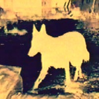
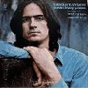

strange music page
* * * 2001.5
|

|
#てなわけで無職です。
仕事辞めて自分が何したい(したくない)
と思うのか？
|
2001.4 / 2001.6
|
-2001.5.30
#失業給付説明会→溝の口でパチンコ→+\10,000くらい。
なのでちょっと諦め気味だったマグマ行ってきました、マグマ。
可笑しかったのは会場出たら雨降ってて、けっこう大量の人がマグマ傘を買ってマグマ傘さして渋谷駅に向かって歩いてって...すごすば。
-2001.5.29
#ダメだす、働きたくなってきちゃった。インドから帰ってきたら仕事探します、本気で。
#今更勝手に一人で南米ブーム。E.Gismontiの1978のECMからのアルバム。なんだかライナーには"dedicated to Spain and the Xingu Inidians..."とか書かれてます、ブラジルのインディアンに捧げるって事ですかね？
TERM CAIPIRAだけ昔買ったんですけど、なんだかあのアルバムの大仰さが合わなくって、ジスモンチはしばらく遠慮してたんですけど......こないだ下のパスコアル買うときに色々
CDNOWとかで試聴してて良さげだったんで買っちゃいました。
2曲目のタブラとギターの緊張感とかも格好良いんですけど、5曲目のJ.Gabarekのサックスが凄いすきです。なにか日が沈んでいくような感じのゆっくりした緊張感、KILLING TIMEにも似たような。

- Palaclo De Pinturas
- Raga
- Kalimba
- Coracao
- Cafe
Sapain
Danca Solitaria No.2
Baiao Malandro
- Egbertro Gismonti (piano on 4.)(8-string guitar on 1.2.5.)(kalimba,wood flute on 3.)
- Collin Walcott (tabla on 1.)(bottle on 5.)
- Nana Vasconcelos (berimbau on 3.5.)(percussions on 2.3.5.)(voice on 5.)
- Ralph Towner (12-string guitars on 1.5.)
- Jan Gabarek (soprano sax on 5.)
ECM RECORDS: ECM-1116 (original release 1978)
-2001.5.25
#久々の買い物。パスコアルとRichard Sinclair's CARAVAN of DREAMSなんて。
最近は何してたかというと...................うーん、釣りとか。ダメそーな感じに。
あとはインド旅行計画(いつの間にかインドに変わってる)を立てたりとか。で、何を悩んでいるかというと5/30のマグマと6/10の清水+向島+鬼怒と6/29のDCPRGのライヴ。全部見たいけど海外行ってたら見れないし、当たり前だけどさ。行ったらきっと1ヶ月は帰ってこないだろし。うーむ。
#エルメート・パスコアルという人です。こんなページ見てる方の中には私なんかより全然詳しい方がきっと結構いらっしゃって、こんなCD当たり前なのかも知れないですけど....ブラジルのインスト音楽の人で、70年代にはM.Davisとも共演してるとか。白髪に眼鏡に天狗鼻で手塚治虫のマンガに出てくるような風貌の人です。
で、このアルバムは1992年のアルバムです。ブラジル音楽やジャズ/フュージョンを基本にしてるみたいなんですけど、鶏の鳴き声や人の声とか「音」の出るもの全てを音楽の要素としてぶち込んでるようなCDです。逆に人の喋り声を元にして音楽に仕立て上げたりとか。
なんてかこんなに制約を感じさせない音楽を聴いたのも久々。色々な要素入れてるのにアヴァンギャルドな感じにならないで、親しみやすいメロディー/展開が有るのも嬉しいです。
以前に
MOON PAGEで話題になってたときから気になってはいたんですけど。こんなに良いならさっさと買えば良かったなと。
あ、とりあえず試聴してみましょう。
Yahoo! Music (聴いたこと無い洋楽捜すの便利っすよ)(2001.5.24)

- O Galo Do Airan
- Rainha Da Pedra Azul
- Viajando Pelo Brasil
- O Farol Que Nos Guia
- Pensamento Positivo
- Peneirando Agua
- Cancao No Paiol Em Curitiba
- Aula De Natacao
- Tr S Coisas
- Irmaos Latinos
- Depois Do Baile
- Quiando As Aves Se Encontram, Nasce O Som
- Round Midnight
- Fazenda Nova
- Ginga Carioca
- Chapeu De Baeta
POLYGRAM: PHCA-4233 (original release 1992)
-2001.5.18
#家のマシーンにLINUXなんて入れたりしててて、LANカード抜こうとしたらICの足が人差し指に刺さりやがって血出て。なんだか切り取り線みたいな感じに跡が残りました。
えーと久しぶりに知り合いのバンド見に行ってて、秋葉原GOOD-MAN。なんだか色んなバンド出てて面白かったです、bellytreeもとても気持ち良かったし。いや、ほんとにあそこ良いライヴハウスだと思います。
ちなみに下にも書いたけど、パスポートを受けとりに横浜へも行ってました。なんだか「不法労働者」みたい...とか言われても、俺日本人なんすけど一応。
で、懲りずにディスクユニオン。gorky's zygotic mynci/Gorky 5が\800。ハバナエキゾチカ/火星ちゃんこんにちわが\300。こんな書くとえらい貧乏人みたいですけど、その通りかも。
あとリンク切れのひどかった洋楽などのページをちょっと直してみました.....本当は根本的に買えなきゃ駄目だなぁと思ったり。
-2001.5.11
#暇ってのは素晴らしいことですね、暇万歳。昨日は東京ザヴィヌルバッハなんて見てて。
今日は役所回りしてきました、国民健康保険と年金の手続きを区役所でして、パスポート申請に関内へ。
一人で山下公園なんか(パスポートセンターの真向かいなんだよ)行ったのはとりあえず置いておいて、関内なので関内ディスクユニオンへ行ってきました。もうこんなんばっかしです。
こまっちゃクレズマ/こまっちゃくれとNEU!/NEU75を。
こまっちゃクレズマがほとらぴからっの曲を演奏してるなんて噂は最近聴いたばっかりなんですけど、全然CD出てるなんて知らなかったので。
ちなみにノイはやっぱり異常に気持ち良かったりします。
-2001.5.9
#予定通りの何もしない毎日、とりあえず離職票貰うまでは。でも既にもう飽き気味だけどさ。
要らないCDをディスクユニオンに売りに行ったりしてきました、40枚くらい売って\13,000くらい。予想よりは多かったようです、3枚\1000で買ったどーでも良いヤツとかも混じってたし。何だかプログレ系の査定(R.Frippのアンビエントなソロとか、GRYPHONとか)が結構高いのには妙な気分。
でも査定待ちの時間にCD物色してたら買っちゃいました、何しに行ったんだかという気もしてきますけど....
でもこのさかな/BLIND MOONはちょっと最高かも、素晴らしすぎ。
もう一枚はこないだイノトモがライヴでやってたヤツ。あ、あとManna、\200。
#James Taylor.....全然こーゆーのは今まで聴いてないので詳しくないのですけど、これが1970年の2枚目になるみたいです。いわゆるシンガーソングライターのはしりみたいな存在らしいです。
自然体で優しいボーカルに、トラッド/カントリー調のあっさりとした演奏。とにかく力の抜けた気持ち良さが有ります。

- Sweet Baby James
- Lo and Behold
- Sunny Skies
- Steamroller
- Country Road
- Oh, Susannah
- Fire And Rain
- Blossom
- Anywhere Like Heaven
- Oh Baby, Don't You Loose Your Lip On Me
- Suite For 20G
- James Taylor (gutiars,vocals)
- Danny Kootch (guitars)
- Carole King (piano)
- Russ Kunkel (drums)
- Randy Meisner (bass)
- Bobby West (bass)
- John London (bass)
- Red Rhodes (steel guitar)
- Jack Bielan (brass arrangements)
- Chris Darrow (fiddle)
WARNER BROS: 7599-27183-2 (original release 1970)
-2001.5.7
#ゴールデンウィーク継続中です、勤労中の方々すみません。
今はゴールデンウィークでもそうでなくても関係無いんですけど、休みは休みなりにうろうろしてました。
5/4は友達の誘いでpitch talks,イノトモを高円寺マーブルトロンで見てきました。イノトモさいこー。
5/5は若人7人くらい集まって川崎市岡本太郎美術館へ、太陽の塔のミニチュア買いました。白いやつ。
5/6は友達を誘って、岡部洋一さんのライヴを調布GINZにて見てきました。
今日は市役所に戸籍謄本を取りに行きました、俺の戸籍謄本は岩手県一関市だったらしいです....とほほ。頼んだばあちゃん。
-2001.5.3
#PCをグレードアップ、ATマシンのK6-2/350MHzからATXのDURON/750MHzへ進化しました。笑っちゃうくらい早くなって気分爽快です。前のマシンをLinuxにしてMacも繋いで一人家庭内ネットワーク化はもうちょい先です、何だか前のマシンのHDDがおかしくなっちゃって。あとキーボード変わったので記号が打ちにくい....IBMキーボードの触感って慣れない。
久々に新譜のCDを買いました。下北沢ONSA(何もここで買わなくても良いCDだけど)
#こないだ細野晴臣さんのFMラジオでちょっとだけかかってて、とても気持ちの良いメロディーのテクノで気になっていたレイハラカミさんの3枚目のフルアルバム。
Aphex Twinとか竹村延和とかみたいな最近のエレクトロの手法のCDみたいなんですけど、音響とか音質じゃなくって曲として何か訴えかけるようなモノを持っていて、とても気に入りました。
表題曲の"red curb"とかちょっと暖かみの有るようなポップな曲が特に好きです。ライナーにも書いてあったんですけど、実際「うた」を感じるようなテクノミュージックに思えました。
たしか弟が1枚目と2枚目持ってたので、借りて聴いてみようと思います。

- unexpected situations
- the backstroke
- cape
- wrest
- red curb
- vapor
- june
- remain
- 2 creams
- again
- put off
SUBLIME RECORDS: IDCS-1004 (2001.4.25)
そーいえば弟にオービタルの新譜も聴かせて貰ったけど、実はちょっとイマイチでした(前作は良かったんだけど)オーブもそうだけど、何でわざわざここに来てボーカルトラック入れたがるのかがちょっと解んないです。うーん。
ついでに、メキシコ旅行を画策中。